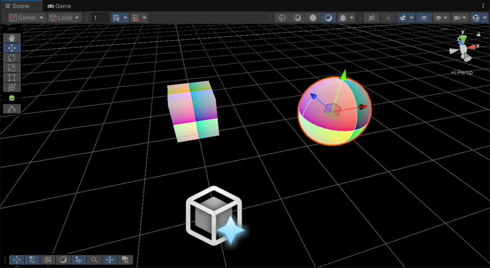
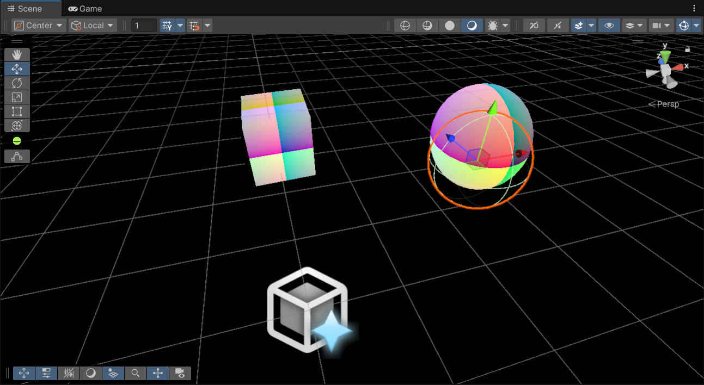

Unity 里边很早就已经支持了光线追踪相关的功能，但是我找了半天都没能找到一个完整一点的入门教程，在此斗胆抛砖引玉，希望看到这里的好兄弟日后发达了之后别忘了小弟。
本文在 Unity HDRP 的基础上实现了一个极简的光线追踪流程（其实并不强依赖 HDRP ，URP 也行）以让大伙能对 Unity Ray Tracing 管线有一个初步的了解，所覆盖的内容可能有所缺漏，日后或许会慢慢填坑。

实现思路
使用 HDRP 的 Global Custom Pass Volume 在 Post Process 后插入了一个自定义的 Pass ，在这个 Pass 中实现了一个简单的光线追踪算法，把光追的结果画到了一个单独的 RenderTexture 上面后， Blit 到 Camera 的 RenderTarget 上。
光线追踪管线
当前 GPU 光线追踪的管线简单来说如下图所示：

本文涉及的部分是上图中的 Ray Generation, Miss, Closest Hit 三个部分：
Ray Generation是光追管线的入口，可以视为一个用于计算各个位置的 Shading 值的 Compute Shader，在其中可以通过调用TraceRay来进行光线追踪。Miss是光线追踪过程中没有击中任何物体时的处理程序Closest Hit是光线追踪过程中击中了物体时的处理程序
在 Unity 中，Ray Generation Shader 和 Miss Shader 保存在 .raytrace 文件中，而 Closest Hit Shader 保存在 .shader 文件中。
Shader
前期准备
准备一个 Common.hlsl 用于存放一些公共的东西，比如下面这些常用的 include ：
1 |
在光线追踪的管线中，存在着一个叫做 payload 的结构体会以类似引用的形式在不同的程序之间进行传递，我们同样在 Common.hlsl 里边定义一下它：
1 | struct DemoPayload { float3 color; }; |
Ray Generation
Ray Generation Shader 顾名思义是一个负责生成光线的入口程序，在 hlsl 中，他被 [shader("raygeneration")] 装饰标识。
和常规的 Shader 一样，我们定义了一些常用的参数：
1 | uint2 DispatchSize; |
其中的 RenderTarget 用于保存光线追踪的结果，AccelerationStructure 是我们创建的光线追踪场景的加速结构，DispatchSize, CameraInvProj 被用于根据 Dispatch 的像素位置重建相机射线：
1 | uint2 dispatchIdx = DispatchRaysIndex().xy; |
要进行光线追踪，我们需要填写 RayDesc 结构体以描述需要追踪的光线，并准备一个初始化过的 payload：
1 | RayDesc ray; |
完成了以上步骤后，就可以调用 TraceRay 函数进行光线追踪，这个函数的定义如下：
1 | Template<payload_t> |
在本文中，我们暂时忽略其它参数，只关注基础的 AccelerationStructure, Ray, Payload 三个参数：
1 | TraceRay(AccelerationStructure, RAY_FLAG_NONE, 0xFF, 0, 1, 0, ray, payload); |
最后，我们将得到的结果写回 RenderTarget 中：
1 | RenderTarget[dispatchIdx] = payload.color; |
Miss Shader
Miss Shader 是光线追踪过程中没有击中任何物体时的处理程序，在本文中，我们简单的把光线的颜色设置为黑色：
1 | [shader("miss")] |
Closest Hit Shader
在 Unity 中，Closest Hit Shader 是光线追踪过程中，在找到最近交点的物体根据物体的材质执行的程序。它一般出现在 ShaderLab 的一个单独的光线追踪 Pass 中：
1 | Pass |
Script
在本文中，C# 端只需要一个简单的 CustomPass，在其中需要干这么几件事：
- 创建和更新光追的场景加速结构
- 维护和更新 Ray Tracing Shader 的参数
- Dispatch Ray Tracing Shader 并把结果 Blit 到 Camera 的 RenderTarget 上
场景加速结构
在 Setup 阶段，配置并创建一个 RayTracingAccelerationStructure ：
1 | var setting = new RayTracingAccelerationStructure.Settings(RayTracingAccelerationStructure.ManagementMode.Automatic, |
并在 Execute 阶段构建它：
1 | cmd.BuildRayTracingAccelerationStructure(m_RTAS); |
如果场景是静态的话，不需要每帧都重复更新加速结构，而只需要构建一次就可以了。
维护和更新 Ray Tracing Shader 的参数
比较基础的一些操作，我们需要维护一个尺寸和相机一样的 RenderTexture 作为临时输出，并且基于 context 中的 camera 信息拿到相机的投影参数。这里就不贴代码了。
进行光线追踪
在 Execute 阶段，除了和 Comput Shader 类似的 Shader 参数之外，还需要指定对应的 ShaderLab 中的 Pass 名称。
设置完成后，使用 cmd.DispatchRays 就可以根据指定的 RayGenerationShader 进行光线追踪了：
1 | cmd.SetRayTracingShaderPass(m_RTShader, "DemoRayTracing"); |
最后别忘了把结果 Blit 到 Camera 的 RenderTarget 上：
1 | cmd.Blit(m_Target, ctx.cameraColorBuffer); |
尾声
至此你已经成功地完成了一个最简单的光线追踪管线了！可喜可贺可喜可贺。但我发现在 Unity Reload 之后，有一定的概率出现渲染结果和相机位置对不上的问题，目前还没有找到原因，但似乎进入 Play Mode 就没有这个问题，比较的神秘。

本文只是实现了一个最基础的光线追踪管线，还没有覆盖到实际的 Ray Flag / Any Hit / Intersection / Hit Attribute 等等内容，希望在不久的将来能有机会把坑填上。